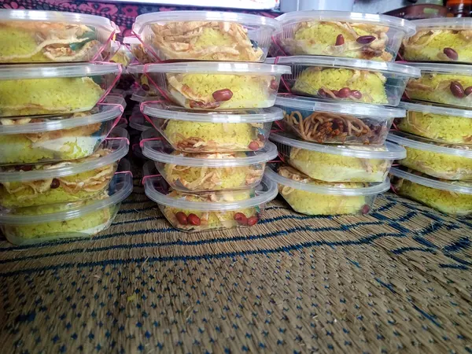

Katalog Sajian
Cek status ketersediaan, pilih porsi, atau tanyakan ketersediaan stok.
Tersedia
Pre-Order
Habis
Sate keong bumbu rica pedas medok, oseng cabai hijau segar, sarapan nasi gurih, hingga aneka gorengan pasar. Siap kirim fresh langsung dari dapur.

Nasi box pesanan pagi, siap diantar
Cek status ketersediaan, pilih porsi, atau tanyakan ketersediaan stok.
Dokumentasi Nyata
Foto asli dari dapur dan pesanan yang kami antar. Klik pada foto untuk memperbesar tampilan.

Sate Keong Rica-Rica Fresh

Nasi Box Siap Antar

Nasi Kuning Fresh dari Dapur

Tahu Sarang Burung

Bakmi Capcay Porsi Rumahan

Stok Nasi Box Pagi Ini
Deskripsi foto...
Lokasi & Pengiriman
Pusat olahan dapur dan pemrosesan kami berlokasi di Kebondalem Kidul, Prambanan, Klaten. Melayani pengantaran pesanan via kurir instan ke Klaten, Sleman Timur, hingga Jogja perbatasan.
Checkout langsung via WhatsApp
Pilih titik lokasi antar untuk melihat estimasi ongkir.
Tentukan tanggal & perkiraan jam antar
Cari lokasi, geser atau klik peta untuk menempatkan pin